<!doctype html>
<html lang="en"><head><meta charset="utf-8"><meta name="viewport" content="width=device-width, initial-scale=1">
<title>ASTRO-USA Habitat Model</title>
<style>
:root { --bg:#f7f8fa; --fg:#1d2733; --muted:#5b6774; --card:#fff; --line:#d9dee5; --accent:#2f5985; }
@media (prefers-color-scheme: dark) { :root:not([data-theme="light"]) { --bg:#12161b; --fg:#e6ebf0; --muted:#9aa7b4; --card:#1b2129; --line:#2c3440; --accent:#7fb0e0; } }
:root[data-theme="dark"] { --bg:#12161b; --fg:#e6ebf0; --muted:#9aa7b4; --card:#1b2129; --line:#2c3440; --accent:#7fb0e0; }
body { margin:0; background:var(--bg); color:var(--fg); font:16px/1.55 system-ui, sans-serif; }
main { max-width:960px; margin:0 auto; padding:64px 16px 64px; }
h1 { font-size:1.8rem; margin:.2em 0; } h2 { margin-top:2.2em; border-bottom:1px solid var(--line); padding-bottom:.2em; }
p.lead { font-size:1.1rem; color:var(--muted); } .note { color:var(--muted); font-size:.92rem; }
table { border-collapse:collapse; width:100%; font-size:.86rem; margin:.6em 0; display:block; overflow-x:auto; }
th, td { border:1px solid var(--line); padding:4px 6px; text-align:left; vertical-align:top; }
figure { margin:1em 0; } img { max-width:100%; height:auto; border:1px solid var(--line); border-radius:6px; background:#fff; }
figcaption { color:var(--muted); font-size:.85rem; }
.badge { font-size:.75rem; padding:1px 6px; border-radius:4px; font-weight:600; }
.pass { background:#d3f4dc; color:#145c2c; } .fail { background:#fde2e1; color:#8a1c17; } .pending { background:#eceff3; color:#4a5560; }
.cta { display:inline-block; padding:8px 14px; border-radius:6px; background:var(--accent); color:#fff; text-decoration:none; margin:4px 8px 4px 0; }
code { font-size:.85em; }
</style>
</head>
<body>
<main>
<h1>ASTRO-USA Habitat Model</h1>
<p class="lead">A sourced, parametric model of the ASTRO-USA Mini-Hab <strong>Food Production Module</strong> — the converted
40 ft high-cube container described in ICES-2026-251 — driving engineering CAD, CFD and a shared VR walk-through.</p>
<p>Design: the ASTRO-USA team (Purdue University Space &amp; Earth Analogs Research Chapter, with NASA KSC and the
University of Arizona), Peters et al., <em>55th International Conference on Environmental Systems</em>, ICES-2026-251.
This model is an independent digital representation built from that paper; it is not the team's own CAD.</p>
<p><a class="cta" href="viewer/">Open the 3-D / VR viewer</a><a class="cta" href="viewer/?scene=primary">Primary habitat concept</a>
<a class="cta" href="assets/FPM_GA.pdf">Drawings (PDF)</a></p>

<h2 id="sources">What the model is built from</h2>
<p>172 ledger records: 108 assumed, 19 derived, 44 specified, 1 user_supplied.
Every number is either quoted from a source or a declared assumption with its reason; the build refuses anything else.</p>
<ul>
<li>Floor plan: the paper's Figure 2 is vector data in the PDF; 22 printed dimensions
were matched to their own dimension lines (max error 0.092 in).</li>
<li>Container shell: SeaCube 40′ high-cube specification sheet; crew loads: NASA BVAD Rev2, Table 3-26.</li>
<li>Bioreactor payloads: generic, unbranded placeholder envelopes, ports and loads, all declared assumptions until the team chooses the hardware.</li>
</ul>

<h2 id="drawings">General arrangement</h2>
<figure>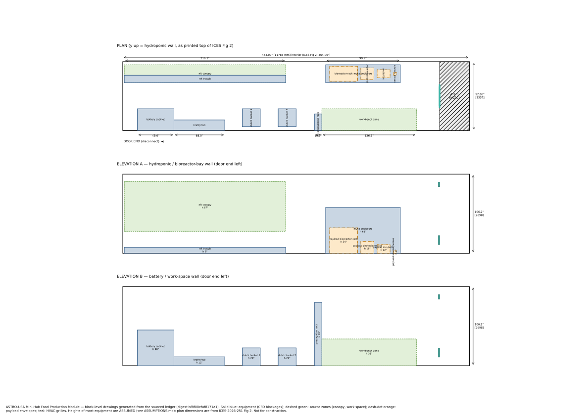<figcaption>Plan and long-wall elevations generated from the registry. Plan dimensions from ICES Fig 2; most equipment heights are assumptions.</figcaption></figure>
<figure>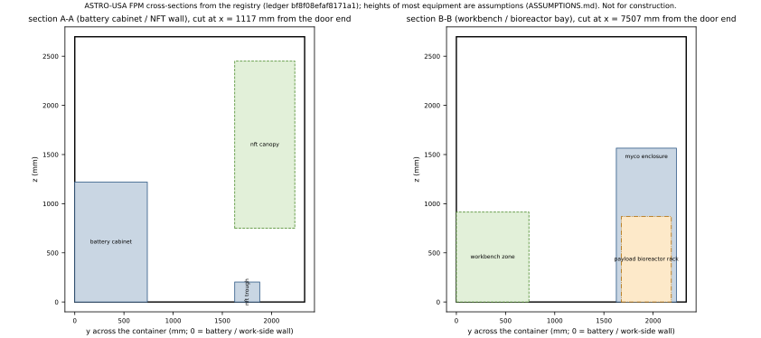<figcaption>Cross-sections across the container through the battery cabinet / NFT wall and the workbench / bioreactor bay, from the same registry.</figcaption></figure>
<p>CAD exchange (DXF, millimetres, one layer per kind of element, for Fusion 360 / AutoCAD): <a href='assets/FPM_elevation_A.dxf'>FPM_elevation_A.dxf</a>, <a href='assets/FPM_elevation_B.dxf'>FPM_elevation_B.dxf</a>, <a href='assets/FPM_plan.dxf'>FPM_plan.dxf</a>, <a href='assets/FPM_section_AA.dxf'>FPM_section_AA.dxf</a>, <a href='assets/FPM_section_BB.dxf'>FPM_section_BB.dxf</a>.</p>

<h2 id="vr">3-D and VR model</h2>
<figure>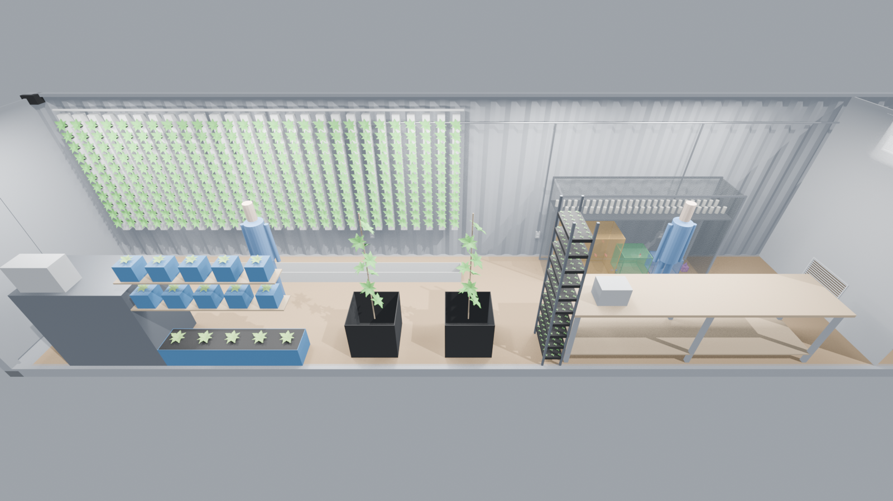<figcaption>Cut-away of the Food Production Module (LOD0). Stand-in equipment is flagged &#x27;illustrative&#x27; in the model.</figcaption></figure>
<figure>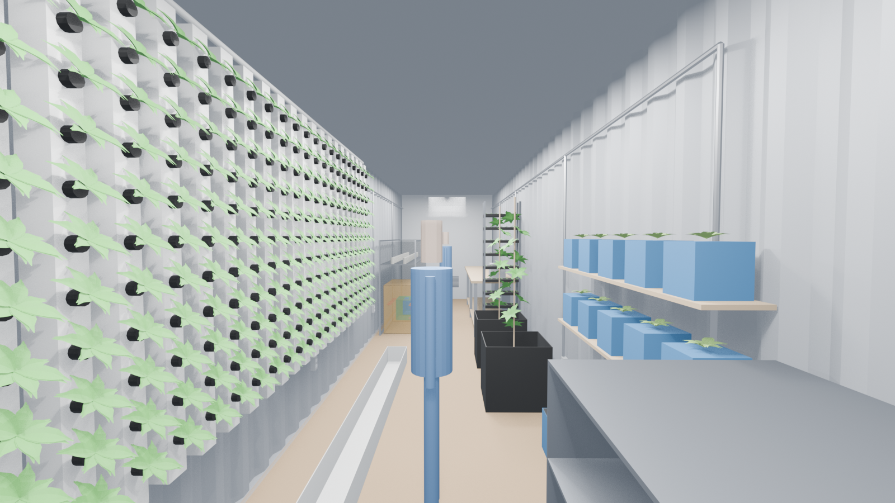<figcaption>Aisle view from the door end.</figcaption></figure>
<table><tr><th>Level</th><th>Triangles</th><th>GLB size</th><th>Gates</th></tr><tr><td>LOD0</td><td>168,736</td><td>1.63 MB</td><td><span class="badge pass">PASS</span></td></tr><tr><td>LOD1</td><td>46,604</td><td>1.14 MB</td><td><span class="badge pass">PASS</span></td></tr><tr><td>LOD2</td><td>19,324</td><td>1.00 MB</td><td><span class="badge pass">PASS</span></td></tr></table>
<p class="note">Engine packs: GLB, USDZ (Apple usdchecker: Success) and FBX with per-node
metadata. The viewer runs in desktop browsers and WebXR headsets (headset testing pending), with shared sessions:
avatars and review pins over a small relay (not yet deployed).</p>

<h2 id="payloads">Bioreactor payloads (generic placeholders)</h2>
<figure>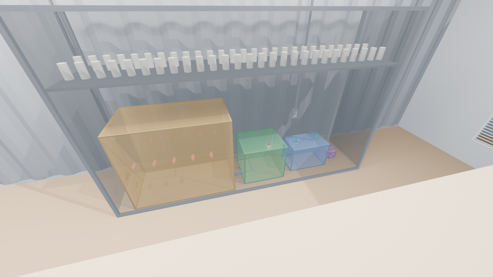<figcaption>Generic payload envelopes in the bioreactor bay: bioreactor rack, photobioreactor, incubator and sensor module; coloured markers are gas ports.</figcaption></figure>
<table><tr><th>Payload</th><th>Ports</th><th>CO₂ data</th></tr><tr><td>bioreactor_rack</td><td>10</td><td>planning value per vessel (ledger payloads.bioreactor_rack.co2_per_tube)</td></tr><tr><td>photobioreactor</td><td>2</td><td>culture CO2 uptake not modelled</td></tr><tr><td>incubator</td><td>2</td><td>plant CO2 exchange not modelled</td></tr><tr><td>sensor_module</td><td>2</td><td>sensor only: no gas source (draws room air through, returns it)</td></tr></table>

<h2 id='cfd'>CFD (OpenFOAM v2606)</h2>
<p>Coarse 80 mm mesh (≈0.26 M cells), placeholder HVAC (the attic unit is unknown), adiabatic walls. Every case must close its mass, energy, CO₂, H₂O and age-of-air balances to within 1 % and be steady (or, for transient runs, statistically stationary) before any result is quoted.</p>
<table><tr><th>Case</th><th>mass</th><th>energy</th><th>CO₂</th><th>H₂O</th><th>age of air</th><th>steady</th></tr><tr><td>Run 1 — steady, 80 mm mesh</td><td><span class="badge pass">PASS</span></td><td><span class="badge fail">FAIL</span><br><small>+58.2%</small></td><td><span class="badge pass">PASS</span><br><small>-0.2%</small></td><td><span class="badge pass">PASS</span><br><small>-0.1%</small></td><td><span class="badge pass">PASS</span><br><small>+0.5%</small></td><td><span class="badge fail">FAIL</span></td></tr><tr><td>Run 2 — steady, balanced start</td><td><span class="badge pass">PASS</span></td><td><span class="badge fail">FAIL</span><br><small>-7.9%</small></td><td><span class="badge fail">FAIL</span><br><small>-2.2%</small></td><td><span class="badge fail">FAIL</span><br><small>-2.2%</small></td><td><span class="badge fail">FAIL</span><br><small>-12.0%</small></td><td><span class="badge fail">FAIL</span></td></tr><tr><td>Baseline — transient, time-averaged over 2 flush times</td><td><span class="badge pass">PASS</span></td><td><span class="badge pass">PASS</span><br><small>+0.1%</small></td><td><span class="badge pass">PASS</span><br><small>-0.6%</small></td><td><span class="badge pass">PASS</span><br><small>-0.6%</small></td><td><span class="badge pass">PASS</span><br><small>-0.2%</small></td><td><span class="badge pass">PASS</span></td></tr></table>
<p class='note'>The steady solver never settles for this flow (a cold supply jet plunging into a heated room is physically unsteady): its balances swing in ~1000-iteration cycles. The study therefore moved to time-averaged transient runs; the baseline transient passes every gate.</p>
<figure>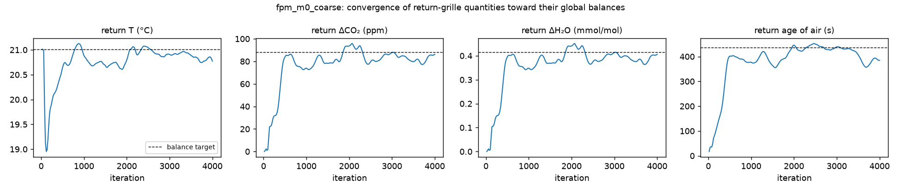<figcaption>Run 2 (steady): return-grille quantities against their global balance targets — the swings that failed the gates.</figcaption></figure>
<figure>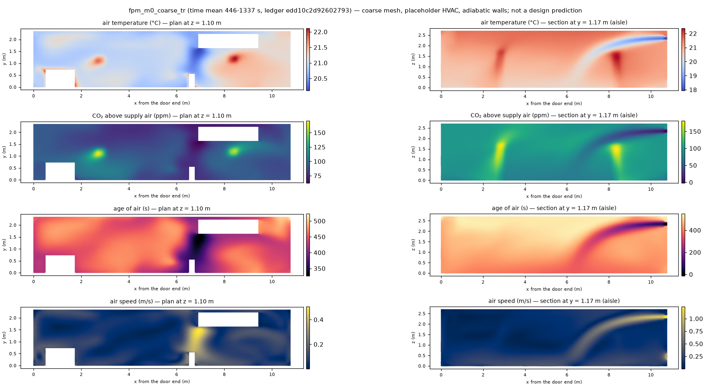<figcaption>Baseline (transient run, time means after the first flush time): plan at breathing height and aisle section. Coarse mesh, placeholder HVAC, adiabatic walls; data: runs/fpm_m0_coarse_tr, figure by habitat/cfd/slices.py. The age-of-air plan is also a viewer overlay.</figcaption></figure>
<h3>Payload siting study (S6)</h3>
<p>The same bioreactor off-gas (10 vessels, placeholder planning rate) released three ways in one flow field. Mixed into the whole room it adds 0.81 ppm above supply air; crew-generated CO₂ at the same locations is 54–150 ppm. Factor = local excess ÷ well-mixed value (&gt; 1: the CO₂ concentrates there). All gates pass.</p>
<p>fpm_s6_coarse_ke_tr (k-ε, fresh averaging window over 3 flush times).</p>
<table><tr><th>location</th><th>bay ppm (×mixed)</th><th>photobioreactor ppm (×mixed)</th><th>nft_wall ppm (×mixed)</th><th>crew ΔCO₂ ppm</th></tr><tr><td>nft_canopy</td><td>0.39 (×0.48)</td><td>0.47 (×0.58)</td><td>1.14 (×1.42)</td><td>86</td></tr><tr><td>crew_1</td><td>0.39 (×0.48)</td><td>0.47 (×0.58)</td><td>0.79 (×0.98)</td><td>127</td></tr><tr><td>crew_2</td><td>0.77 (×0.95)</td><td>1.17 (×1.44)</td><td>0.76 (×0.94)</td><td>119</td></tr><tr><td>workbench_zone</td><td>0.70 (×0.86)</td><td>0.73 (×0.90)</td><td>0.76 (×0.94)</td><td>85</td></tr><tr><td>crew_1_head</td><td>0.39 (×0.48)</td><td>0.47 (×0.58)</td><td>0.94 (×1.17)</td><td>150</td></tr><tr><td>crew_2_head</td><td>0.30 (×0.37)</td><td>0.36 (×0.44)</td><td>0.46 (×0.57)</td><td>54</td></tr><tr><td>incubator_intake_fan</td><td>0.41 (×0.51)</td><td>0.52 (×0.64)</td><td>0.87 (×1.08)</td><td>80</td></tr><tr><td>sensor_module_sample_in</td><td>0.51 (×0.62)</td><td>0.55 (×0.68)</td><td>0.88 (×1.09)</td><td>81</td></tr><tr><td>nft_canopy_0</td><td>0.39 (×0.49)</td><td>0.47 (×0.58)</td><td>1.16 (×1.44)</td><td>83</td></tr><tr><td>nft_canopy_1</td><td>0.39 (×0.48)</td><td>0.46 (×0.57)</td><td>1.19 (×1.48)</td><td>88</td></tr><tr><td>nft_canopy_2</td><td>0.39 (×0.48)</td><td>0.46 (×0.57)</td><td>1.11 (×1.38)</td><td>93</td></tr><tr><td>bay_centre</td><td>0.44 (×0.54)</td><td>0.60 (×0.74)</td><td>0.77 (×0.95)</td><td>85</td></tr></table>
<figure><figcaption>Enrichment factor per location and route (log scale). Data: runs/fpm_s6_coarse_ke_tr, figure by habitat/cfd/s6_report.py; screening mesh, placeholder HVAC.</figcaption></figure>
<figure><figcaption>Time-averaged plan slices of the three route tracers. Data: runs/fpm_s6_coarse_ke_tr, figure by habitat/cfd/s6_report.py; screening mesh, placeholder HVAC.</figcaption></figure>
<h3>Grid convergence (GCI)</h3>
<p>Celik et al. (2008) procedure on the time-averaged baseline at three meshes; all mesh gates pass: True. A GCI is quoted only where the mesh-to-mesh differences exceed the time-averaging noise (largest half-window gap of the return-grille series: 0.041 K, 0.87 ppm) and the observed order p lies in 0.5–3.0 (the schemes mix first and second order); otherwise it is shown in brackets with the reason. 4 of 19 quantities pass both tests. Age of air and speed have no noise yardstick and are judged on p alone.</p><p>In plain terms: room-wide means change by at most 2.6 % between the finest and coarsest mesh, while local values near the crew and along the aisle change by up to 13 % (aisle_x8:dCO2_ppm); air speeds are too small and noisy for a GCI. These runs used kOmegaSST; the scenario runs from 13 Oct 2026 use k-ε, which this study does not cover.</p><table><tr><th>mesh</th><th>h (mm)</th><th>cells</th></tr><tr><td>medium</td><td>48.7</td><td>547,747</td></tr><tr><td>coarse</td><td>62.8</td><td>255,123</td></tr><tr><td>xcoarse</td><td>84.6</td><td>103,502</td></tr></table><table><tr><th>quantity</th><th>fine</th><th>medium</th><th>coarse</th><th>p</th><th>GCI fine %</th><th>flags</th></tr><tr><td>domain:T_excess_K</td><td>3.119</td><td>3.091</td><td>3.052</td><td>0.51</td><td>(8.23)</td><td>within sampling noise</td></tr><tr><td>domain:AoA_s</td><td>451.9</td><td>454.7</td><td>448.1</td><td>3.04</td><td>(0.66)</td><td>p outside expected range, oscillatory</td></tr><tr><td>domain:dCO2_ppm</td><td>90.32</td><td>89.98</td><td>87.99</td><td>5.73</td><td>(0.14)</td><td>p outside expected range</td></tr><tr><td>occupied:U_mean_m_s</td><td>0.1082</td><td>0.1134</td><td>0.1121</td><td>6.39</td><td>(1.46)</td><td>p outside expected range, oscillatory</td></tr><tr><td>crew_1:dCO2_ppm</td><td>141.9</td><td>131.4</td><td>126</td><td>3.64</td><td>(6.08)</td><td>p outside expected range</td></tr><tr><td>crew_1:T_excess_K</td><td>3.458</td><td>3.314</td><td>3.228</td><td>2.99</td><td>4.57</td><td>ok</td></tr><tr><td>crew_2:dCO2_ppm</td><td>144</td><td>131.3</td><td>136.6</td><td>3.95</td><td>(6.34)</td><td>p outside expected range, oscillatory</td></tr><tr><td>crew_2:T_excess_K</td><td>3.753</td><td>3.632</td><td>3.682</td><td>3.96</td><td>(2.32)</td><td>p outside expected range, oscillatory</td></tr><tr><td>nft_canopy:T_excess_K</td><td>3.274</td><td>3.249</td><td>3.219</td><td>0.03</td><td>(114.39)</td><td>within sampling noise, p outside expected range</td></tr><tr><td>nft_canopy:dH2O_mmol_mol</td><td>0.414</td><td>0.4138</td><td>0.4055</td><td>12.13</td><td>(0.00)</td><td>p outside expected range</td></tr><tr><td>aisle_x2:T_excess_K</td><td>2.917</td><td>2.883</td><td>2.883</td><td>33.28</td><td>(0.00)</td><td>within sampling noise, p outside expected range</td></tr><tr><td>aisle_x2:dCO2_ppm</td><td>97.22</td><td>96.91</td><td>97.76</td><td>3.49</td><td>(0.28)</td><td>within sampling noise, p outside expected range, oscillatory</td></tr><tr><td>aisle_x2:U_m_s</td><td>0.08323</td><td>0.07824</td><td>0.084</td><td>0.51</td><td>(53.54)</td><td>oscillatory</td></tr><tr><td>aisle_x5:T_excess_K</td><td>2.964</td><td>2.922</td><td>2.856</td><td>1.08</td><td>5.56</td><td>ok</td></tr><tr><td>aisle_x5:dCO2_ppm</td><td>91.4</td><td>89.77</td><td>85.56</td><td>2.82</td><td>2.13</td><td>ok</td></tr><tr><td>aisle_x5:U_m_s</td><td>0.03799</td><td>0.0297</td><td>0.01624</td><td>1.17</td><td>78.81</td><td>ok</td></tr><tr><td>aisle_x8:T_excess_K</td><td>3.475</td><td>3.301</td><td>3.298</td><td>19.61</td><td>(0.04)</td><td>p outside expected range</td></tr><tr><td>aisle_x8:dCO2_ppm</td><td>114.5</td><td>101.3</td><td>99.31</td><td>9.17</td><td>(1.54)</td><td>p outside expected range</td></tr><tr><td>aisle_x8:U_m_s</td><td>0.0596</td><td>0.06809</td><td>0.06274</td><td>2.04</td><td>(26.17)</td><td>oscillatory</td></tr></table>
<h3>Turbulence-model sensitivity of the baseline</h3>
<p>The baseline repeated with kEpsilon (case fpm_m0_coarse_ke_tr) against kOmegaSST (fpm_m0_coarse_tr), same mesh, loads and averaging; both pass every gate. Room-wide means change by at most 1.9 %, local values by up to 25 % (aisle_x8:dCO2_ppm) and air speeds by up to 18 %. Like the mesh study, this says the room-scale picture is robust and single-point values are not. Full table: results/cfd/model_compare.md.</p>
<h3>Scenarios (k-ε, coarse mesh)</h3>
<p>Each passing scenario against the k-ε baseline (520 W, 142 L/s supply), same mesh and model. Values are time means above the supply air (the supply temperature and outdoor-air fraction are placeholders). Full tables: results/cfd/scenarios.md.</p>
<table><tr><th>quantity</th><th>baseline</th><th>S2: six crew</th><th>S5a: half airflow</th></tr><tr><td>domain:T_excess_K</td><td>3.108</td><td>4.998 (×1.61)</td><td>7.315 (×2.35)</td></tr><tr><td>domain:dCO2_ppm</td><td>91.65</td><td>272.5 (×2.97)</td><td>223.5 (×2.44)</td></tr><tr><td>domain:AoA_s</td><td>446.1</td><td>439.8 (×0.99)</td><td>1009 (×2.26)</td></tr><tr><td>crew_1:dCO2_ppm</td><td>135.1</td><td>303.5 (×2.25)</td><td>277.7 (×2.06)</td></tr><tr><td>nft_canopy:dH2O_mmol_mol</td><td>0.4244</td><td>1.337 (×3.15)</td><td>1.09 (×2.57)</td></tr></table>
<p class='note'>Not shown: S5b (double airflow): not settled within its run (gates fail); a restarted extension was unreliable after the room's pressure had drifted, so it is reported as unsettled.</p>
<h3>Validation: IEA Annex 20 two-dimensional test case</h3>
<p>A ceiling wall jet driving a room, as in the FPM, solved with the habitat cases' wall functions and schemes and compared with Aalborg University's laser-Doppler measurements (isothermal, Re = 5000; the buoyant variant has no data). kOmegaSST, used for the runs up to 13 Oct 2026, put a spurious eddy near the floor and separated the jet from the ceiling early; standard k-ε was closer to the measured profiles at every mesh, so the scenario runs from 13 Oct use k-ε (ledger cfd.turbulence_model). RMS error of u/u0 at the measured points:</p>
<table><tr><th>model, mesh</th><th>cells</th><th>x=H</th><th>x=2H</th><th>ceiling h/2</th><th>floor h/2</th></tr><tr><td>kOmegaSST 80 mm</td><td>4,144</td><td>0.105</td><td>0.095</td><td>0.168</td><td>0.181</td></tr><tr><td>kOmegaSST 40 mm</td><td>16,875</td><td>0.145</td><td>0.067</td><td>0.179</td><td>0.162</td></tr><tr><td>kOmegaSST 20 mm</td><td>67,500</td><td>0.136</td><td>0.083</td><td>0.180</td><td>0.161</td></tr><tr><td>kEpsilon 80 mm</td><td>4,144</td><td>0.061</td><td>0.038</td><td>0.124</td><td>0.074</td></tr><tr><td>kEpsilon 40 mm</td><td>16,875</td><td>0.065</td><td>0.037</td><td>0.068</td><td>0.072</td></tr><tr><td>kEpsilon 20 mm</td><td>67,500</td><td>0.068</td><td>0.036</td><td>0.063</td><td>0.062</td></tr></table>
<figure>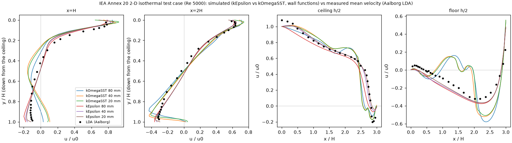<figcaption>Simulated vs measured mean velocity on the four Annex 20 lines. Data: results/cfd/annex20.json (Aalborg LDA data in sources/annex20_lda.json), figure by habitat/cfd/annex20.py.</figcaption></figure>
<h3>Light budget: can plant gas exchange be modelled yet?</h3>
<p>Plant CO₂ uptake and transpiration scale with light. NASA's lettuce crop model (BVAD) is valid for 200–500 µmol/m²·s. If the paper's 450 W maximum draw includes the grow lights, even with every watt going to light at the best LED fixture efficacy reported by 2020 (3 µmol/J; Kusuma et al. 2020) the NFT wall stays below that range, so the plants are not yet coupled into the CFD: the canopy carries LED heat only. The lighting specification is requested from the team.</p>
<table><tr><th>lit area</th><th>m²</th><th>max PPF, all 450 W to light (µmol/m²·s)</th><th>power for 200 µmol/m²·s</th></tr><tr><td>NFT wall face (model geometry)</td><td>9.33</td><td>144.7</td><td>622 W</td></tr><tr><td>297 plants at BVAD density</td><td>15.47</td><td>87.3</td><td>1031 W</td></tr></table>
<h3>S3: HVAC off, door closed (CO₂ build-up)</h3>
<p>A well-mixed (0-D) model of the 63 m³ of room air, crew at BVAD's awake CO₂ rate, starting from outdoor air (426.1 ppm, NOAA). Container leakage is unknown, so it is swept. Limit: OSHA's 5000 ppm (an 8-hour time-weighted average). The CFD reports CO₂ relative to the supply air, so the same build-up applies with the attic unit running if it only recirculates room air: the unit's outdoor-air provision is one of the team questions. Plants and temperature are not included.</p>
<table><tr><th>crew</th><th>infiltration (ACH)</th><th>initial rise (ppm/h)</th><th>hours to 5000 ppm</th></tr><tr><td>2</td><td>0</td><td>727</td><td>6.29</td></tr><tr><td>2</td><td>0.1</td><td>727</td><td>9.92</td></tr><tr><td>2</td><td>0.5</td><td>727</td><td>never</td></tr><tr><td>6</td><td>0</td><td>2180</td><td>2.1</td></tr><tr><td>6</td><td>0.1</td><td>2180</td><td>2.35</td></tr><tr><td>6</td><td>0.5</td><td>2180</td><td>never</td></tr></table>
<figure>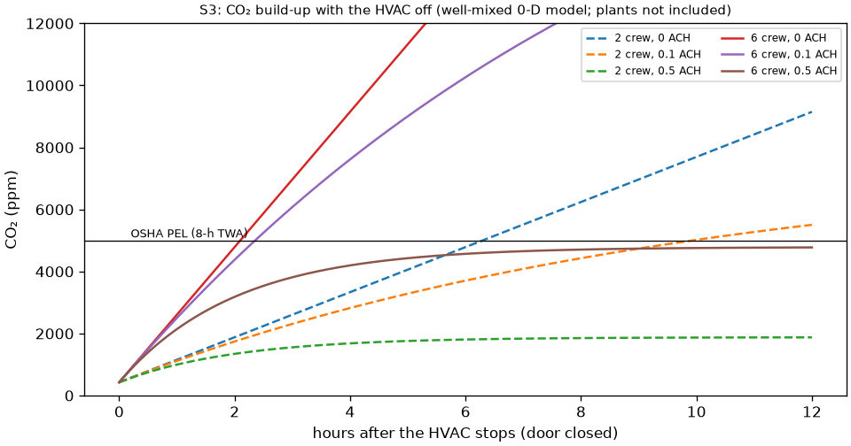<figcaption>CO₂ after the HVAC stops, by crew size and air-change rate. Data: results/s3_hvac_off.json, model habitat/s3_hvac_off.py.</figcaption></figure>
<h3>Sensor placement (for the Opto 22 / SIMOC monitoring)</h3>
<p>Where does one wall-mounted sensor best represent the air the crew breathe? Each candidate wall position is scored against the occupied-zone mean of the same run, keeping its worst case over 4 passing run(s) (fpm_m0_coarse_ke_tr, fpm_s2_coarse_ke_tr, fpm_s5a_coarse_ke_tr, fpm_s6_coarse_ke_tr). 101 of 184 positions are usable; 78 near plants, water culture, the bioreactor bay or payloads are excluded because their gas exchange is not modelled yet, so CO₂ and H₂O both come only from the crew here. A screening ranking on a coarse mesh with placeholder HVAC, to be confirmed by measurement. The clearance column shows how close each position is to growing systems: crops taller than their containers (e.g. in the Dutch buckets) could reach a position the box-based exclusion allowed. The top positions are also a viewer overlay.</p>
<table><tr><th>rank</th><th>wall</th><th>position (m)</th><th>height (m)</th><th>worst T error (K)</th><th>worst CO₂ error (%)</th><th>clearance to nearest plant / water / payload part</th></tr><tr><td>1</td><td>attic partition</td><td>y = 0.75</td><td>1.2</td><td>0.27</td><td>4.9</td><td>1.56 m (myco_enclosure)</td></tr><tr><td>2</td><td>wall y=0 (battery / work side)</td><td>x = 10.25</td><td>1.2</td><td>0.31</td><td>6.9</td><td>1.77 m (myco_enclosure)</td></tr><tr><td>3</td><td>wall y=0 (battery / work side)</td><td>x = 2.00</td><td>1.2</td><td>0.28</td><td>10.1</td><td>0.90 m (kratky_tub)</td></tr><tr><td>4</td><td>wall y=0 (battery / work side)</td><td>x = 10.50</td><td>1.2</td><td>0.35</td><td>6.7</td><td>1.90 m (myco_enclosure)</td></tr><tr><td>5</td><td>attic partition</td><td>y = 0.50</td><td>1.2</td><td>0.36</td><td>5.8</td><td>1.71 m (myco_enclosure)</td></tr></table>
<figure>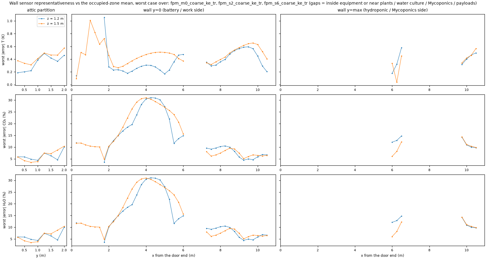<figcaption>Worst-case error along each wall at both mount heights; gaps are inside equipment or excluded. Data: results/cfd/sensor_placement.json, figure by habitat/cfd/sensors.py.</figcaption></figure>

<h2 id="site">Mini-Hab site and primary habitat (concept level)</h2>
<figure>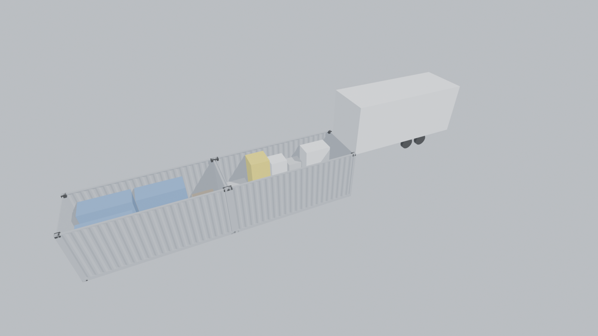<figcaption>Mini-Hab site after Fig 10 (topology only; sizes assumed): Crew Quarters, Laboratory Module, BioWaTERR trailer placeholder.</figcaption></figure>
<figure>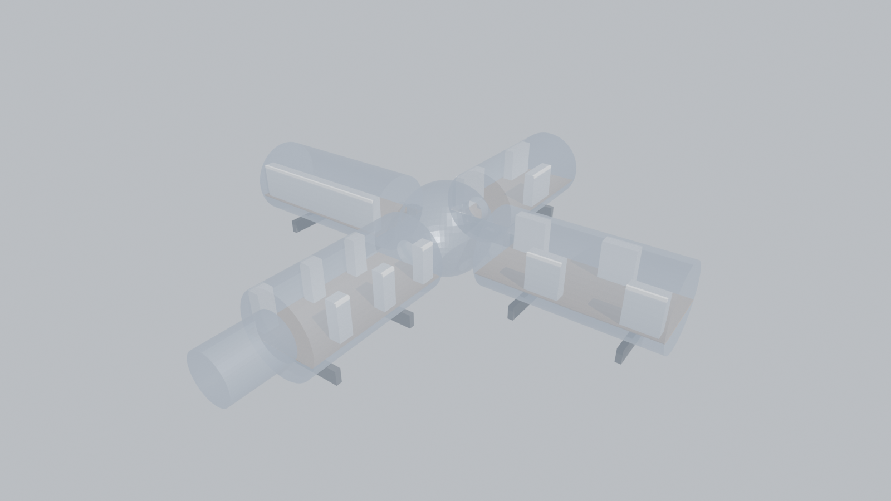<figcaption>Primary-habitat concept generator output (design study, not the team&#x27;s design).</figcaption></figure>
<p>Concept: 488 m³ internal pressurised volume (airlock excluded) for a crew of 6; NASA's minimum acceptable net habitable volume is 25 m³ per person (Whitmire et al. 2014). Habitable fraction needed: 0.31.</p><table><tr><th>Habitable fraction (assumed)</th><th>NHV per crewmember (m³)</th><th>≥ 25 m³</th></tr><tr><td>0.40</td><td>32.5</td><td><span class="badge pass">PASS</span></td></tr><tr><td>0.50</td><td>40.7</td><td><span class="badge pass">PASS</span></td></tr><tr><td>0.60</td><td>48.8</td><td><span class="badge pass">PASS</span></td></tr></table>

<h2 id="assumptions">Assumptions (108)</h2>
<p>What the model does <em>not</em> know yet. "Ask team" marks values the ASTRO-USA team can replace with facts.</p>
<table><tr><th>Ledger path</th><th>Value</th><th>Unit</th><th>Ask team</th><th>Why</th></tr><tr><td><code>cfd.turbulence_model</code></td><td>kEpsilon</td><td>-</td><td></td><td>Chosen from the IEA Annex 20 2-D isothermal validation (results/cfd/annex20.md): with the habitat cases&#x27; wall functions and schemes, standard k-epsilon reproduced the measured floor return flow and ceiling-jet separation that kOmegaSST missed, at every mesh tested. Isothermal evidence only (the buoyant Annex 20 case has no data). Runs built before 2026-10-13 15:00 used kOmegaSST (their case files and ledger digest record it). User decision 2026-10-13.</td></tr><tr><td><code>container.length_discrepancy_placement</code></td><td>door end</td><td>-</td><td>yes</td><td>Fig 2 length (464 in = 11785.6 mm) is 246.4 mm shorter than the steel interior (12032 mm). Unexplained (end framing? door-end wall?); the gap is placed at the door end for the exterior shell only.</td></tr><tr><td><code>container.lining.ceiling</code></td><td>0.0</td><td>mm</td><td>yes</td><td>As lining.floor; clear height therefore taken as the steel interior height.</td></tr><tr><td><code>container.lining.floor</code></td><td>0.0</td><td>mm</td><td>yes</td><td>No floor build-up is stated. The Fig 2 width (92 in = 2336.8 mm) is within 15 mm of the bare steel width (2352 mm), suggesting little or no lining.</td></tr><tr><td><code>container.roof_thickness</code></td><td>40.0</td><td>mm</td><td></td><td>The spec gives only external (2896) and internal (2698) heights; the 198 mm difference is split as roof panel + roof rails (this value) and floor structure (the remainder). Affects only the exterior shell, not the CFD domain.</td></tr><tr><td><code>crew.body_box</code></td><td>[0.4, 0.25]</td><td>m</td><td></td><td>Standing crewmember represented as a 1.75 m tall box of this plan size (width x depth) carrying the BVAD sources; body shape not modelled in M0.</td></tr><tr><td><code>fpm.attic.is_full_height_compartment</code></td><td>True</td><td>-</td><td>yes</td><td>Figs 4-5 renders draw the 40 in attic as a full-height end compartment behind a partition (not a loft); the CFD domain therefore stops at the partition.</td></tr><tr><td><code>fpm.battery_cabinet.height</code></td><td>48.0</td><td>in</td><td>yes</td><td>Fig 2 gives only the 49 x 29 in footprint; Fig 5 shows a 4 x 4 wall-mounted battery array. Modelled as a floor cabinet of assumed height.</td></tr><tr><td><code>fpm.bay.enclosure_height_fraction</code></td><td>0.58</td><td>-</td><td>yes</td><td>Bioreactor bay (the zone labelled Mycoponics in ICES-2026-251 Fig 2). Fig 4 render: floor-standing transparent enclosure roughly 55-60 % of wall height; not dimensioned.</td></tr><tr><td><code>fpm.dutch_buckets.height</code></td><td>24.0</td><td>in</td><td>yes</td><td>Fig 5 render draws the buckets as cubes on the 24 x 24 in Fig 2 footprint.</td></tr><tr><td><code>fpm.electrical.heat_split</code></td><td>{&#x27;hydroponics&#x27;: 0.5, &#x27;propagation&#x27;: 0.2, &#x27;battery_cabin</td><td>fraction of load_average</td><td>yes</td><td>The paper gives total load only. M0 smoke-test split across the powered zones (pumps/lights at the NFT wall and propagation rack, inverter/charger losses at the battery cabinet, sensor computer at the bench) until the team supplies the equipment list.</td></tr><tr><td><code>fpm.hydroponics.canopy_z_bottom</code></td><td>0.75</td><td>m</td><td>yes</td><td>Fig 4 render shows the 11 planting rows occupying roughly the upper two-thirds of the wall above a floor trough; lowest row height not stated.</td></tr><tr><td><code>fpm.hydroponics.canopy_z_top</code></td><td>2.45</td><td>m</td><td>yes</td><td>Fig 4 render: top planting row just below the ceiling (interior height 2.698 m); exact height not stated.</td></tr><tr><td><code>fpm.hydroponics.trough_depth</code></td><td>10.0</td><td>in</td><td>yes</td><td>As trough_height; placed against the front edge of the 24 in hydroponics band.</td></tr><tr><td><code>fpm.hydroponics.trough_height</code></td><td>8.0</td><td>in</td><td>yes</td><td>Fig 4 render shows a low floor-level collection trough along the hydroponic wall; its size is not dimensioned.</td></tr><tr><td><code>fpm.kratky.floor_tub_height</code></td><td>12.0</td><td>in</td><td>yes</td><td>Fig 5 render shows a low rectangular floor tub; height not dimensioned.</td></tr><tr><td><code>fpm.propagation.height_fraction</code></td><td>0.8</td><td>-</td><td>yes</td><td>Fig 5 render: the ten-level rack reaches roughly four-fifths of wall height; not dimensioned.</td></tr><tr><td><code>fpm.workbench.top_height</code></td><td>36.0</td><td>in</td><td>yes</td><td>Fig 5 render shows a bench in the work space; height not stated. Common standing-bench height assumed.</td></tr><tr><td><code>payloads.bioreactor_rack.co2_per_tube</code></td><td>1.82</td><td>g/day</td><td>yes</td><td>Planning value for the CO2 released by one small fungal or microbial culture vessel; not a measured rate.</td></tr><tr><td><code>payloads.bioreactor_rack.envelope</code></td><td>[951.0, 507.6, 869.0]</td><td>mm</td><td>yes</td><td>Representative outer envelope of a benchtop rack of ten tubular bioreactor vessels (5 x 2), placeholder until the team chooses the hardware.</td></tr><tr><td><code>payloads.bioreactor_rack.heat</code></td><td>0.0</td><td>W</td><td>yes</td><td>No heat budget for the placeholder rack; any pumps, lighting or sterilisation hardware would add to it.</td></tr><tr><td><code>payloads.bioreactor_rack.vent_flow</code></td><td>0.35</td><td>L/min</td><td>yes</td><td>Planning value for the headspace sweep that carries each vessel&#x27;s off-gas out through its vent.</td></tr><tr><td><code>payloads.incubator.envelope</code></td><td>[440.0, 275.0, 300.0]</td><td>mm</td><td>yes</td><td>Representative outer envelope of a benchtop germination / microgreen incubator, placeholder until the team chooses the hardware.</td></tr><tr><td><code>payloads.incubator.heat</code></td><td>0.0</td><td>W</td><td>yes</td><td>No heat budget for the placeholder incubator.</td></tr><tr><td><code>payloads.layout.frame_clearance</code></td><td>25.0</td><td>mm</td><td></td><td>Inside clearance to the enclosure frame posts (matches the VR frame section).</td></tr><tr><td><code>payloads.layout.offgas_route</code></td><td>bay</td><td>-</td><td>yes</td><td>Where the bioreactor vents&#x27; off-gas goes is a design choice (into the bay -&gt; room air, into the photobioreactor&#x27;s sparger, or ducted to the NFT wall). Default: vented into the bay; scenario S6 compares the routes.</td></tr><tr><td><code>payloads.layout.order</code></td><td>[&#x27;bioreactor_rack&#x27;, &#x27;photobioreactor&#x27;, &#x27;incubator&#x27;</td><td>-</td><td>yes</td><td>Illustrative arrangement along the bay from the door end: the photobioreactor beside the bioreactor rack (so it can take the rack&#x27;s off-gas), then the incubator and the sensor module; spaced evenly. Not a team decision.</td></tr><tr><td><code>payloads.layout.rotation_deg</code></td><td>{&#x27;bioreactor_rack&#x27;: 0, &#x27;photobioreactor&#x27;: 180, &#x27;incubat</td><td>deg</td><td>yes</td><td>Rotation of each payload about its own vertical axis. The photobioreactor is turned 180 deg so its gas inlet (its +x face) faces the bioreactor rack beside it.</td></tr><tr><td><code>payloads.photobioreactor.co2_uptake</code></td><td>0.0</td><td>g/day</td><td></td><td>CO2 fixation by the algal culture is not modelled yet (no rate for the placeholder).</td></tr><tr><td><code>payloads.photobioreactor.envelope</code></td><td>[446.0, 400.0, 408.3]</td><td>mm</td><td>yes</td><td>Representative outer envelope of a benchtop algae photobioreactor, placeholder until the team chooses the hardware.</td></tr><tr><td><code>payloads.photobioreactor.led_power</code></td><td>16.4</td><td>W</td><td>yes</td><td>Placeholder electrical power of the culture&#x27;s LED panel at full output, all of it treated as heat to the room.</td></tr><tr><td><code>payloads.photobioreactor.sparge_flow_max</code></td><td>1.8</td><td>L/min</td><td>yes</td><td>Placeholder maximum gas flow of the sparging pump; sets how many bioreactor vents it can take in the S6 route that pipes off-gas into it.</td></tr><tr><td><code>payloads.ports.bioreactor_rack.envelope_check</code></td><td>[951.0, 507.6, 869.0]</td><td>mm</td><td>yes</td><td>Illustrative port layout: one headspace vent per vessel on the rack&#x27;s front face, at mid-height of the vessels; each carries the ledger&#x27;s per-vessel vent flow and CO2.</td></tr><tr><td><code>payloads.ports.bioreactor_rack.vent_r0c0</code></td><td>{&#x27;name&#x27;: &#x27;vent_r0c0&#x27;, &#x27;kind&#x27;: &#x27;gas_out&#x27;,</td><td>mm</td><td>yes</td><td>Illustrative port layout: one headspace vent per vessel on the rack&#x27;s front face, at mid-height of the vessels; each carries the ledger&#x27;s per-vessel vent flow and CO2.</td></tr><tr><td><code>payloads.ports.bioreactor_rack.vent_r0c1</code></td><td>{&#x27;name&#x27;: &#x27;vent_r0c1&#x27;, &#x27;kind&#x27;: &#x27;gas_out&#x27;,</td><td>mm</td><td>yes</td><td>Illustrative port layout: one headspace vent per vessel on the rack&#x27;s front face, at mid-height of the vessels; each carries the ledger&#x27;s per-vessel vent flow and CO2.</td></tr><tr><td><code>payloads.ports.bioreactor_rack.vent_r0c2</code></td><td>{&#x27;name&#x27;: &#x27;vent_r0c2&#x27;, &#x27;kind&#x27;: &#x27;gas_out&#x27;,</td><td>mm</td><td>yes</td><td>Illustrative port layout: one headspace vent per vessel on the rack&#x27;s front face, at mid-height of the vessels; each carries the ledger&#x27;s per-vessel vent flow and CO2.</td></tr><tr><td><code>payloads.ports.bioreactor_rack.vent_r0c3</code></td><td>{&#x27;name&#x27;: &#x27;vent_r0c3&#x27;, &#x27;kind&#x27;: &#x27;gas_out&#x27;,</td><td>mm</td><td>yes</td><td>Illustrative port layout: one headspace vent per vessel on the rack&#x27;s front face, at mid-height of the vessels; each carries the ledger&#x27;s per-vessel vent flow and CO2.</td></tr><tr><td><code>payloads.ports.bioreactor_rack.vent_r0c4</code></td><td>{&#x27;name&#x27;: &#x27;vent_r0c4&#x27;, &#x27;kind&#x27;: &#x27;gas_out&#x27;,</td><td>mm</td><td>yes</td><td>Illustrative port layout: one headspace vent per vessel on the rack&#x27;s front face, at mid-height of the vessels; each carries the ledger&#x27;s per-vessel vent flow and CO2.</td></tr><tr><td><code>payloads.ports.bioreactor_rack.vent_r1c0</code></td><td>{&#x27;name&#x27;: &#x27;vent_r1c0&#x27;, &#x27;kind&#x27;: &#x27;gas_out&#x27;,</td><td>mm</td><td>yes</td><td>Illustrative port layout: one headspace vent per vessel on the rack&#x27;s front face, at mid-height of the vessels; each carries the ledger&#x27;s per-vessel vent flow and CO2.</td></tr><tr><td><code>payloads.ports.bioreactor_rack.vent_r1c1</code></td><td>{&#x27;name&#x27;: &#x27;vent_r1c1&#x27;, &#x27;kind&#x27;: &#x27;gas_out&#x27;,</td><td>mm</td><td>yes</td><td>Illustrative port layout: one headspace vent per vessel on the rack&#x27;s front face, at mid-height of the vessels; each carries the ledger&#x27;s per-vessel vent flow and CO2.</td></tr><tr><td><code>payloads.ports.bioreactor_rack.vent_r1c2</code></td><td>{&#x27;name&#x27;: &#x27;vent_r1c2&#x27;, &#x27;kind&#x27;: &#x27;gas_out&#x27;,</td><td>mm</td><td>yes</td><td>Illustrative port layout: one headspace vent per vessel on the rack&#x27;s front face, at mid-height of the vessels; each carries the ledger&#x27;s per-vessel vent flow and CO2.</td></tr><tr><td><code>payloads.ports.bioreactor_rack.vent_r1c3</code></td><td>{&#x27;name&#x27;: &#x27;vent_r1c3&#x27;, &#x27;kind&#x27;: &#x27;gas_out&#x27;,</td><td>mm</td><td>yes</td><td>Illustrative port layout: one headspace vent per vessel on the rack&#x27;s front face, at mid-height of the vessels; each carries the ledger&#x27;s per-vessel vent flow and CO2.</td></tr><tr><td><code>payloads.ports.bioreactor_rack.vent_r1c4</code></td><td>{&#x27;name&#x27;: &#x27;vent_r1c4&#x27;, &#x27;kind&#x27;: &#x27;gas_out&#x27;,</td><td>mm</td><td>yes</td><td>Illustrative port layout: one headspace vent per vessel on the rack&#x27;s front face, at mid-height of the vessels; each carries the ledger&#x27;s per-vessel vent flow and CO2.</td></tr><tr><td><code>payloads.ports.incubator.envelope_check</code></td><td>[440.0, 275.0, 300.0]</td><td>mm</td><td>yes</td><td>Illustrative port layout: an intake and an exhaust fan in the incubator&#x27;s hood, blowing upward; fan flow not set.</td></tr><tr><td><code>payloads.ports.incubator.exhaust_fan</code></td><td>{&#x27;name&#x27;: &#x27;exhaust_fan&#x27;, &#x27;kind&#x27;: &#x27;fan_out&#x27</td><td>mm</td><td>yes</td><td>Illustrative port layout: an intake and an exhaust fan in the incubator&#x27;s hood, blowing upward; fan flow not set.</td></tr><tr><td><code>payloads.ports.incubator.intake_fan</code></td><td>{&#x27;name&#x27;: &#x27;intake_fan&#x27;, &#x27;kind&#x27;: &#x27;fan_in&#x27;,</td><td>mm</td><td>yes</td><td>Illustrative port layout: an intake and an exhaust fan in the incubator&#x27;s hood, blowing upward; fan flow not set.</td></tr><tr><td><code>payloads.ports.photobioreactor.envelope_check</code></td><td>[446.0, 400.0, 408.3152]</td><td>mm</td><td>yes</td><td>Illustrative port layout: a gas inlet on the +x face (for off-gas piped from the bioreactor rack) and a vent on the top of the culture vessel.</td></tr><tr><td><code>payloads.ports.photobioreactor.gas_in</code></td><td>{&#x27;name&#x27;: &#x27;gas_in&#x27;, &#x27;kind&#x27;: &#x27;gas_in&#x27;, &#x</td><td>mm</td><td>yes</td><td>Illustrative port layout: a gas inlet on the +x face (for off-gas piped from the bioreactor rack) and a vent on the top of the culture vessel.</td></tr><tr><td><code>payloads.ports.photobioreactor.vent</code></td><td>{&#x27;name&#x27;: &#x27;vent&#x27;, &#x27;kind&#x27;: &#x27;gas_out&#x27;, &#x2</td><td>mm</td><td>yes</td><td>Illustrative port layout: a gas inlet on the +x face (for off-gas piped from the bioreactor rack) and a vent on the top of the culture vessel.</td></tr><tr><td><code>payloads.ports.sensor_module.envelope_check</code></td><td>[104.0, 96.0, 96.0]</td><td>mm</td><td>yes</td><td>Illustrative port layout: a sample inlet and outlet on the -x face of the sensor module; a small pump draws room air through and returns it.</td></tr><tr><td><code>payloads.ports.sensor_module.sample_in</code></td><td>{&#x27;name&#x27;: &#x27;sample_in&#x27;, &#x27;kind&#x27;: &#x27;sample&#x27;, </td><td>mm</td><td>yes</td><td>Illustrative port layout: a sample inlet and outlet on the -x face of the sensor module; a small pump draws room air through and returns it.</td></tr><tr><td><code>payloads.ports.sensor_module.sample_out</code></td><td>{&#x27;name&#x27;: &#x27;sample_out&#x27;, &#x27;kind&#x27;: &#x27;sample_exhaus</td><td>mm</td><td>yes</td><td>Illustrative port layout: a sample inlet and outlet on the -x face of the sensor module; a small pump draws room air through and returns it.</td></tr><tr><td><code>payloads.sensor_module.envelope</code></td><td>[104.0, 96.0, 96.0]</td><td>mm</td><td>yes</td><td>Representative outer envelope of a small pumped gas-sampling sensor module, placeholder until the team chooses the hardware.</td></tr><tr><td><code>payloads.sensor_module.heat</code></td><td>0.0</td><td>W</td><td></td><td>A small battery sensor module is taken as a negligible heat source.</td></tr><tr><td><code>primary.airlock</code></td><td>{&#x27;diameter&#x27;: 2.4, &#x27;length&#x27;: 3.0}</td><td>m</td><td>yes</td><td>Concept airlock cylinder on the node (Fig 1: vacuum pump, air pump, pressure sensors). Excluded from NHV, as in the NHV guideline.</td></tr><tr><td><code>primary.crew</code></td><td>6</td><td>-</td><td>yes</td><td>The paper sizes the Mini-Hab for a crew of six; the primary habitat&#x27;s crew size is not stated. Six also matches the NHV guideline&#x27;s assumption.</td></tr><tr><td><code>primary.deck_below_axis</code></td><td>0.6</td><td>m</td><td>yes</td><td>Floor deck height in the horizontal cylinders, below the module axis (gives ~2.6 m headroom on the centre line of a 4.0 m inner diameter).</td></tr><tr><td><code>primary.habitable_fraction</code></td><td>[0.4, 0.5, 0.6]</td><td>-</td><td>yes</td><td>NHV is pressurised volume minus equipment, stowage and systems; it can only be measured from a real internal layout. A low / central / high fraction of the internal pressurised volume (airlock excluded) brackets it.</td></tr><tr><td><code>primary.hatch_tunnel</code></td><td>{&#x27;diameter&#x27;: 1.3, &#x27;length&#x27;: 0.6}</td><td>m</td><td>yes</td><td>Short hatch tunnel (berthing length) between the node and each module. Modules start beyond the node surface, so perpendicular modules clash only if a module is wider than the node; the generator checks for clashes.</td></tr><tr><td><code>primary.modules</code></td><td>[{&#x27;name&#x27;: &#x27;crew&#x27;, &#x27;diameter&#x27;: 4.2, &#x27;length&#x</td><td>m</td><td>yes</td><td>Concept: four radial cylinders on the node, with the systems of the paper&#x27;s Fig 1 grouped by function. Diameters and lengths are study variables (a ~4 m class is ISS-like and road-transportable as an oversize load; not checked against any transport rule).</td></tr><tr><td><code>primary.node</code></td><td>{&#x27;diameter&#x27;: 5.0}</td><td>m</td><td>yes</td><td>Concept: one spherical hub node joining the modules (ISS-like topology). Diameter is a study variable.</td></tr><tr><td><code>primary.wall_thickness</code></td><td>0.1</td><td>m</td><td>yes</td><td>Shell + insulation + liner allowance between outer and inner diameter. Material not selected.</td></tr><tr><td><code>scenario_m0.crew_on_duty</code></td><td>2</td><td>-</td><td>yes</td><td>Smoke test: two crewmembers working (one at the NFT wall, one at the bench).</td></tr><tr><td><code>scenario_m0.crew_x</code></td><td>[110.0, 330.0]</td><td>in</td><td></td><td>Crew positions along the length (Fig 2 frame): in front of the hydroponics and at the work space.</td></tr><tr><td><code>scenario_m0.hvac.return_grille</code></td><td>[24.0, 12.0]</td><td>in</td><td>yes</td><td>Return grille (width x height) low on the attic partition; size and position unknown.</td></tr><tr><td><code>scenario_m0.hvac.return_grille_center_z</code></td><td>0.45</td><td>m</td><td>yes</td><td>Return low on the partition.</td></tr><tr><td><code>scenario_m0.hvac.setpoint_T</code></td><td>24.0</td><td>C</td><td>yes</td><td>Initial room temperature; BVAD Table 3-23 inputs use a 297.2 K (24.05 C) cabin.</td></tr><tr><td><code>scenario_m0.hvac.supply_T</code></td><td>18.0</td><td>C</td><td>yes</td><td>Placeholder coil-leaving temperature for the smoke test.</td></tr><tr><td><code>scenario_m0.hvac.supply_flow</code></td><td>300.0</td><td>cfm</td><td>yes</td><td>Unknown attic unit; a small ductless split delivers a few hundred cfm. Placeholder until the unit is known; S5 screens the sensitivity.</td></tr><tr><td><code>scenario_m0.hvac.supply_grille</code></td><td>[30.0, 6.0]</td><td>in</td><td>yes</td><td>Supply grille (width x height) high on the attic partition; size and position unknown.</td></tr><tr><td><code>scenario_m0.hvac.supply_grille_center_z</code></td><td>2.35</td><td>m</td><td>yes</td><td>Supply high on the partition (split-type head).</td></tr><tr><td><code>scenario_m0.payloads_powered</code></td><td>False</td><td>-</td><td></td><td>M0 smoke test keeps the payloads unpowered so its heat total (520 W) is unchanged; the payload-siting scenario (S6) switches them on.</td></tr><tr><td><code>scenario_m0.walls_adiabatic</code></td><td>True</td><td>-</td><td></td><td>M0 smoke test only: all heat leaves through the HVAC. U-value walls with sol-air temperatures arrive in M2.</td></tr><tr><td><code>scenario_s2.crew_on_duty</code></td><td>6</td><td>-</td><td>yes</td><td>Peak occupancy: the paper sizes the Mini-Hab food supply for a crew of six; S2 puts all six in the FPM at once as an upper bound on crew heat, CO2 and water vapour.</td></tr><tr><td><code>scenario_s2.crew_x</code></td><td>[40.0, 110.0, 180.0, 250.0, 330.0, 390.0]</td><td>in</td><td>yes</td><td>Six standing crewmembers spread along the aisle (Fig 2 frame), one every ~60-80 in, clear of the attic partition.</td></tr><tr><td><code>scenario_s3.crew_cases</code></td><td>[2, 6]</td><td>-</td><td></td><td>The M0 working crew and the S2 peak occupancy.</td></tr><tr><td><code>scenario_s3.infiltration_ach</code></td><td>[0.0, 0.1, 0.5]</td><td>1/h</td><td>yes</td><td>Air changes per hour through the closed container&#x27;s seals and penetrations: unknown, so swept from sealed (worst case) to leaky. Measure with a CO2 decay test.</td></tr><tr><td><code>scenario_s5a.hvac.supply_flow</code></td><td>150.0</td><td>cfm</td><td></td><td>S5 sensitivity screen: half the M0 placeholder flow (300 cfm), supply temperature unchanged.</td></tr><tr><td><code>scenario_s5b.hvac.supply_flow</code></td><td>600.0</td><td>cfm</td><td></td><td>S5 sensitivity screen: twice the M0 placeholder flow (300 cfm), supply temperature unchanged.</td></tr><tr><td><code>scenario_s6.bioreactor_rack_open</code></td><td>True</td><td>-</td><td></td><td>The rack is an open frame: 10 tubes (~0.105 m3) fill ~27 % of its 0.391 m3 envelope, below the 0.6 fill fraction above which a part is modelled as a solid (review item 10). The model carries envelopes only, so the tubes are not drawn.</td></tr><tr><td><code>scenario_s6.enclosure_open</code></td><td>True</td><td>-</td><td>yes</td><td>The bioreactor bay enclosure&#x27;s walls, doors and ventilation are not described (Fig 4 shows a transparent box). With a solid block nothing inside it could exchange air, so S6 treats the bay as open to the room: an upper bound on mixing out of the bay.</td></tr><tr><td><code>scenario_s6.payloads_powered</code></td><td>True</td><td>-</td><td></td><td>S6 runs the payloads: the photobioreactor&#x27;s LED heat and the bioreactor rack&#x27;s off-gas CO2 are switched on.</td></tr><tr><td><code>scenario_s6.routes</code></td><td>[&#x27;bay&#x27;, &#x27;photobioreactor&#x27;, &#x27;nft_wall&#x27;]</td><td>-</td><td>yes</td><td>Candidate off-gas routes: (1) each vessel vent releases into the bay; (2) piped to the photobioreactor&#x27;s sparger up to its maximum flow, the remaining vessels venting into the bay, culture uptake taken as zero (no rate for the placeholder), so the CO2 leaves at its vent; (3) ducted to the NFT canopy and released evenly through it.</td></tr><tr><td><code>sensors.exclusion_layers</code></td><td>[&#x27;plants&#x27;, &#x27;water&#x27;, &#x27;payloads&#x27;]</td><td>-</td><td></td><td>Registry layers whose parts exchange gas or humidity with the air in reality but not (or not fully) in the current CFD.</td></tr><tr><td><code>sensors.exclusion_margin</code></td><td>0.3</td><td>m</td><td></td><td>Candidates within this distance of a plant, water-culture, bioreactor-bay or payload part are dropped: plant and fungal gas exchange is not modelled yet (the canopy carries LED heat only), so the CFD would wrongly rate a sensor in or beside a canopy as representative of the room, whereas in reality it would read the plants.</td></tr><tr><td><code>sensors.mount_heights</code></td><td>[1.2, 1.5]</td><td>m</td><td>yes</td><td>Candidate wall-mount heights: seated and standing breathing height, both reachable for maintenance.</td></tr><tr><td><code>sensors.occupied_zone_z</code></td><td>[0.1, 1.8]</td><td>m</td><td></td><td>Height band the crew occupy and breathe in (standing crew, 1.75 m tall in the crew ledger); the reference each candidate sensor is scored against is the volume mean over this band.</td></tr><tr><td><code>sensors.spacing</code></td><td>0.25</td><td>m</td><td></td><td>Spacing of candidate positions along each wall; positions that fall inside equipment are dropped.</td></tr><tr><td><code>sensors.wall_offset</code></td><td>0.05</td><td>m</td><td></td><td>Sensor sampling point this far off the wall lining (housing depth).</td></tr><tr><td><code>site.crew_layout</code></td><td>[{&#x27;item&#x27;: &#x27;bunk stack (2 berths)&#x27;, &#x27;wall&#x27;: &#x27;n</td><td>m</td><td>yes</td><td>Concept berthing for the paper&#x27;s crew of six (two-week mission): three two-berth stacks, lockers and a table. Illustrative only; galley, hygiene and medical spaces of Fig 1 are not yet placed.</td></tr><tr><td><code>site.lab_layout</code></td><td>[{&#x27;item&#x27;: &#x27;sink + eyewash&#x27;, &#x27;wall&#x27;: &#x27;north&#x</td><td>m</td><td>yes</td><td>Concept arrangement of the equipment listed for the Lab and Work Area and the waste-management bioreactor train in Fig 1 (Year-2 Laboratory Module, BSL-2 intent). Positions and sizes are illustrative proportions for discussion only.</td></tr><tr><td><code>site.module_container</code></td><td>20 ft standard dry</td><td>-</td><td>yes</td><td>Fig 10 draws the Laboratory and Crew Quarters modules at roughly half to two-thirds of the FPM&#x27;s length; a 20 ft container is the nearest standard unit. Not stated in the paper.</td></tr><tr><td><code>site.row_gap</code></td><td>0.0</td><td>m</td><td>yes</td><td>Fig 10 draws the rows touching. A real site would leave access space between modules; replace with the planned spacing.</td></tr><tr><td><code>site.trailer.height</code></td><td>3.5</td><td>m</td><td>yes</td><td>Placeholder enclosed-trailer height; replace from ICES-2026-290 or the trailer itself.</td></tr><tr><td><code>site.trailer.width</code></td><td>2.59</td><td>m</td><td>yes</td><td>Trailer dimensions are in ICES-2026-290 (not available); 102 in (2.59 m) is the usual US road-legal trailer width, used as a placeholder.</td></tr><tr><td><code>vr.battery_block</code></td><td>[12.0, 6.8, 9.0]</td><td>in</td><td>yes</td><td>Visual only: 16 x 12 V batteries (Fig 6) drawn as generic 12 V blocks (L x W x H); chemistry and model unknown.</td></tr><tr><td><code>vr.conduit_height</code></td><td>2.35</td><td>m</td><td></td><td>Visual only: Fig 8 shows circuits running along both long walls to the rear panel; run height not stated.</td></tr><tr><td><code>vr.kratky_shelf_heights</code></td><td>[1.0, 1.4]</td><td>m</td><td>yes</td><td>Fig 5 render shows two wall shelves above the floor tub; heights not stated.</td></tr><tr><td><code>vr.kratky_small_bucket</code></td><td>8.0</td><td>in</td><td>yes</td><td>Fig 5 render: small cube-shaped buckets, five per shelf; size not stated.</td></tr><tr><td><code>vr.nav_agent_radius</code></td><td>0.25</td><td>m</td><td></td><td>Walkable-area (navmesh) margin around equipment: half a typical shoulder width, so a VR avatar or an engine character stays clear of what it would brush against.</td></tr><tr><td><code>vr.nav_head_clearance</code></td><td>1.9</td><td>m</td><td></td><td>An element blocks walking if its underside is lower than this (crew height 1.75 m in the crew ledger plus margin); higher items such as conduits are overhead.</td></tr><tr><td><code>vr.nft_channel</code></td><td>{&#x27;width&#x27;: 4.0, &#x27;depth&#x27;: 4.0, &#x27;cup_diameter&#x27;: 2.0}</td><td>in</td><td>yes</td><td>Visual only: Fig 4 shows 27 vertical columns of 11 planting holes; channel and net-cup sizes not stated.</td></tr><tr><td><code>vr.panel_center_height</code></td><td>1.5</td><td>m</td><td></td><td>Visual only: breaker panel and disconnect mounting heights not stated.</td></tr><tr><td><code>vr.plant_radius</code></td><td>{&#x27;nft&#x27;: 0.11, &#x27;seedling&#x27;: 0.03, &#x27;kratky&#x27;: 0.13, &#</td><td>m</td><td>yes</td><td>Visual only: plant canopy radii for leafy greens (NFT, Kratky), seedlings (propagation) and a vining crop (Dutch buckets); crops are not specified in the paper.</td></tr><tr><td><code>vr.receptacle_height</code></td><td>18.0</td><td>in</td><td></td><td>Visual only: mounting height not stated; a common receptacle height is used.</td></tr><tr><td><code>vr.side_corrugation</code></td><td>{&#x27;pitch&#x27;: 0.278, &#x27;depth&#x27;: 0.036, &#x27;flat_fraction&#x27;: </td><td>m</td><td></td><td>Visual only: trapezoidal side-panel corrugation proportions typical of dry containers; not measured on the FPM&#x27;s unit.</td></tr><tr><td><code>vr.solar_panel</code></td><td>[1.76, 1.13, 0.035]</td><td>m</td><td>yes</td><td>Visual only: 10 panels totalling 4.4 kW nominal implies ~440 W each; drawn at a size typical of that class. Model, racking and tilt unknown.</td></tr><tr><td><code>vr.workbench_top_thickness</code></td><td>1.5</td><td>in</td><td></td><td>Visual only.</td></tr></table>

<h2 id="reproduce">Reproduce</h2>
<p><code>uv sync &amp;&amp; make cad check vr docs test</code> · CFD: <code>make cfd-coarse post</code> (Docker, pinned
OpenFOAM v2606 image). Ledger digest <code>bf8f08efaf8171a1</code>.</p>
</main>
</body></html>
